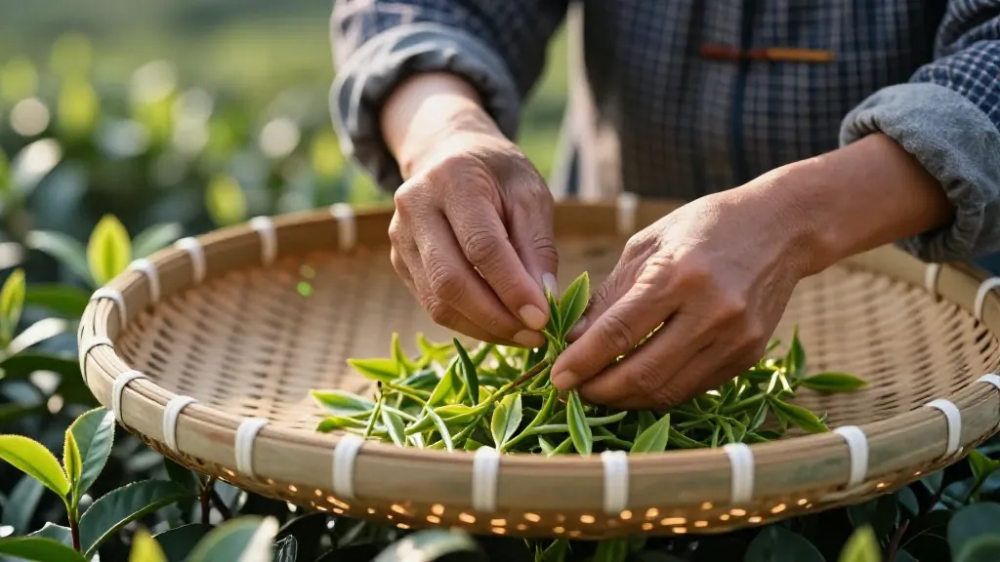

🍵 本文采用一问一答形式，为茶友解答2025年茶圈最关心的五大热点话题。阿凤姐在惠州惠城区东湖花园一区沿江商铺89-136（凤凰茶业）等你喝茶。
Q1：2025年茶圈最火的话题是什么？
阿凤姐：今年茶桌上最热的五大话题，我给大家总结成一句话——"无糖茶逆龄、白茶普洱争C位、茶山旅游爆火、直播买茶有坑也有宝、中国茶漂洋过海"。
具体来讲：1）无糖茶逆龄化——年轻人玩冷泡、气泡茶，传统茶也能很潮；2）白茶普洱之争——消费者不再盲目追年份，更看重"喝得起的好茶"；3）茶山旅游爆发——采茶体验成城里人周末新宠；4）直播买茶——套路深不见底，但溯源直播在崛起；5）中国茶出海——从巴黎到纽约都在学"Gongfu Cha"。
我在惠州开店二十多年，这些热点天天在茶桌上被茶友问起。下面一个个给大家说透。
Q2：年轻人也开始喝茶了？无糖茶真的健康吗？
阿凤姐：今年超市里，东方树叶、三得利们杀疯了。但真正的传统茶叶也在悄悄"逆龄"——90后、00后涌入茶圈，不是喝不动了，是喝得越来越"野"：冷泡、气泡茶、茶+咖啡混搭。
别笑话年轻人保温杯里泡枸杞，人家现在玩的是"原叶冷泡"和"锁鲜小袋茶"。
阿凤姐说句实在话：咱做茶的也得跟上，包装要好看、冲泡要简单、口感要清爽。传统不是守旧，是让年轻人觉得"这口茶懂我"。来我店里，我常给年轻客人推荐鸭屎香冷泡——高扬的香气配空调房，解暑又提神。
Q3：白茶和普洱，今年哪个更值得买？
阿凤姐：2025年茶叶拍卖市场上，老白茶和中期普洱依然是硬通货。但今年有个新趋势——"喝得起的好茶"比"炒上天的老茶"更受欢迎。消费者学精了，不盲目追年份，开始讲究"山头味"和"真实转化"。
别听那些"十年陈起步"的忽悠。今年的新白茶、三年左右的普洱生茶，性价比最高。真正会喝茶的人，喝的是当下这一口的鲜活，不是标签上的数字。
阿凤姐建议：咱老百姓，找靠谱渠道，买喝得起的真货，比啥都强。在惠州买茶，欢迎来我店里先喝再买，喝明白了再掏钱。
Q4：茶山旅游为什么这么火？惠州这边有茶山可以去吗？
阿凤姐：茶旅融合今年彻底爆发。从福鼎到普洱，从西湖龙井村到武夷山茶博园，"去茶山住两天"成了城里人周末的新选项。采茶体验、制茶工坊、茶园民宿，一把茶叶带火了整条乡村振兴路。
去过茶山的人都知道，清晨的茶园比任何咖啡都提神。茶叶的根在土里，魂在山水里。
惠州本地茶友问：咱惠州有没有茶山可去？我老实说，惠州本地不产凤凰单丛（那是潮州凤凰山的特产），但惠州离潮州不算远，周末开车或高铁过去，凤凰山一日游完全可行。来我店里买茶的客人，我时常给他们推荐凤凰山茶旅路线——亲手摘一芽一叶，回来那杯茶，味道绝对不一样。
Q5：直播间买茶靠谱吗？怎么避坑？
阿凤姐：直播卖茶今年规模又翻了几番，但争议也不断——"99元十年老班章""大师手作限量款"，套路深不见底。
不过另一方面，真正懂茶的主播和溯源直播（直接播茶园、茶厂）正在崛起，行业在"去泡沫"。
直播买茶三原则：第一，太便宜的别信——好茶成本摆在那里；第二，讲"大师""稀缺"但不讲产地的别碰——没有产地信息的茶，来源不明；第三，买之前多看看评论区追评——追评比好评真实。
阿凤姐建议：好茶不怕比，怕的是你没机会比。网上做功课，线下做决策。欢迎来我店里先试后买，泡几泡不同价位的对比喝，喝明白了再买。就算不买，交个朋友也行。
Q6：中国茶在国外火了吗？外国人真的懂茶吗？
阿凤姐：2025年，中国茶叶出口量稳步回升，但更大的故事是"茶文化出海"——不是卖原料，而是卖品牌、卖生活方式。从巴黎到纽约，新中式茶馆越来越多，外国年轻人也开始学着说"Gongfu Cha"。
别小看这一杯茶。它是中国递给世界的一张温和名片。咱中国人讲究"以茶会友"，这份从容和体面，漂洋过海也有人懂。
我在店里也接待过外国客人，泡工夫茶给他们看，他们眼睛都亮了。茶，不需要翻译，好喝就是 universal language（通用语言）。
Q7：阿凤姐，你自己怎么看这些茶圈热点？
阿凤姐：说句实在话，早上四点半，天还没亮透，泡一壶今年的春茶，看着茶叶在水里慢慢舒展——这就是咱中国人一天的开始。
2025年的茶圈，热闹归热闹，说到底，喝茶最终还是为了那一份安静。不管是追热点还是守老规矩，杯子端起来，心能静下来，这口茶就没白喝。
我每天早上到店第一件事，就是给自己泡一泡老枞蜜兰香。不是因为它最贵，是因为这口茶稳——蜜甜打底、兰香收尾、枞韵回甘，喝完了心就静下来了。
说到底，喝茶没有最好，只有最合适。今天你的身体需要什么、心情需要什么，那杯茶就是对的。